Chapter 8: 6G: The Next Generation¶
6G is being designed right now, for launch around 2030. This chapter explains the ITU's IMT-2030 vision and approval process, 3GPP's timeline from Release 20 studies to Release 21 specifications (as agreed by autumn 2026), the early design decisions and migration debate, and candidate spectrum heading into WRC-27. It then explores the key technologies — AI-native radio, sensing, smart surfaces and cell-free MIMO, integrated satellites, new waveforms, digital twins, sustainability and security — the worldwide research ecosystem, and how to tell real progress from hype.
8.1 Why 6G? The IMT-2030 Vision¶
6G is the mobile generation now being designed for launch around 2030. The ITU's framework, Recommendation ITU-R M.2160 (2023), sets out what it should do: grow 5G's three usage scenarios into six, adding AI, sensing and coverage everywhere, while being sustainable, secure and inclusive. In short, a network that communicates, senses and computes.
Think of it like…
If 5G built faster motorways, 6G aims to make the motorways smart infrastructure that also watches traffic, predicts jams and reaches remote villages — while using less energy per car.
Real-world example
Amara, a planner at the fictional Port of Kessa, reads the IMT-2030 framework to see what 2030s networks could offer: remote crane control with immersive video (Immersive Communication + HRLLC), drone tracking from base stations (ISAC) and coverage for ships offshore (Ubiquitous Connectivity).
How it works¶
- ITU-R Working Party 5D studied technology trends (Report ITU-R M.2516, 2022) and agreed the IMT-2030 framework in 2023.
- Recommendation M.2160, approved in November 2023, defines six usage scenarios, four overarching aspects and fifteen capabilities with indicative target ranges.
- ITU then writes binding minimum requirements and evaluation rules, while 3GPP studies the technology (Release 20).
- Technology proposals are submitted to ITU from February 2027, evaluated, and approved as IMT-2030 around 2030.
- Operators launch commercial 6G from about 2030, gradually, alongside 5G-Advanced.
Who uses it
Technology strategists, standards delegates, researchers, regulators and vendor product planners.
Key takeaway
Name the six scenarios: Immersive Communication, HRLLC and Massive Communication (evolved from 5G) plus Ubiquitous Connectivity, AI and Communication, and Integrated Sensing and Communication (new).
Going deeper
- M.2160's four overarching aspects apply to every scenario: sustainability, connecting the unconnected, ubiquitous intelligence, and security, privacy and resilience.
- Indicative capability ranges include peak data rates of 50, 100 or 200 Gbit/s, user-experienced rates of 300-500 Mbit/s, latency of 0.1-1 ms and connection density of 10^6 to 10^8 devices per km².
- Reliability targets range from 1-10^-5 to 1-10^-7, and mobility from 500 to 1,000 km/h — covering high-speed trains and, potentially, aircraft.
- New capabilities with no 5G equivalent include positioning (indicative 1-10 cm accuracy), sensing-related capabilities, AI-related capabilities, coverage, interoperability and sustainability.
- The framework gives ranges, not pass/fail values; binding minimum requirements come in the separate technical performance requirements report, drafted in February 2026 with 20 requirements.
- Operator groups such as NGMN stress that 6G must lower cost and energy and simplify migration, rather than chase headline peak rates — a lesson from slow 5G returns.
Common mistakes & misconceptions
- Quoting '1 Tbit/s' as the 6G target — that came from early research papers; M.2160 lists up to 200 Gbit/s as an indicative peak.
- Thinking 6G replaces 5G overnight — 5G-Advanced keeps evolving and 6G will roll out gradually from about 2030.
- Treating the six scenarios as six separate networks — one 6G system is expected to serve all of them.
Key standards, network functions, technologies & tools¶
| Name | What it does | Example |
|---|---|---|
| ITU-R M.2160 ITU-R (approved November 2023) · Standard · Research · 6G |
Framework recommendation for IMT-2030: usage scenarios, overarching aspects, capabilities and indicative targets. | Students quote M.2160 when asked which new usage scenarios 6G adds beyond 5G's three. |
| ITU-R M.2516 ITU-R (2022) · Standard · Research · 6G |
Report on future technology trends for IMT towards 2030 and beyond, a key input to the 6G vision. | A researcher cites M.2516 for trends such as AI-native interfaces, sensing and sub-THz communication. |
| Immersive Communication ITU-R M.2160 · Concept · Research · 6G |
Usage scenario extending eMBB for XR, holographic and multi-sensory experiences needing high rates and low latency. | A remote surgeon trainee joins an operation through a mixed-reality headset with haptic feedback. |
| HRLLC ITU-R M.2160 · Concept · Research · 6G |
Hyper-Reliable and Low-Latency Communication: extends URLLC for precise industrial control, robotics and safety systems. | Collaborative robots on a fictional assembly line coordinate within one millisecond and with near-zero packet loss. |
| Massive Communication ITU-R M.2160 · Concept · Research · 6G |
Usage scenario extending mMTC to very dense networks of sensors and devices, including low-power and battery-free ones. | A smart farm deploys thousands of soil sensors per square kilometre reporting moisture every hour. |
| Ubiquitous Connectivity ITU-R M.2160 · Concept · Research · 6G |
New scenario aiming to connect rural, remote and sparsely populated areas, including through satellite integration. | A village health post far from towers gets broadband through an integrated satellite-terrestrial network. |
| AI and Communication ITU-R M.2160 · Concept · Research · 6G |
New scenario where the network supports distributed AI training and inference and offers AI-related services. | Delivery robots share a model that the network helps train and update across edge sites. |
| Integrated Sensing and Communication (scenario) ITU-R M.2160 · Concept · Research · 6G |
New scenario using radio signals to sense objects and environments — distance, speed, shape — as well as communicate. | A highway's base stations detect a stalled vehicle and warn approaching cars. |
| Overarching aspects ITU-R M.2160 · Concept · Research · 6G |
Four principles for all scenarios: sustainability, connecting the unconnected, ubiquitous intelligence, and security/privacy/resilience. | An operator's 6G strategy paper organises its goals around these four aspects. |
| Peak data rate (IMT-2030) ITU-R M.2160 · Metric · Research · 6G |
Highest theoretical rate for one device; M.2160 gives 50, 100 or 200 Gbit/s as indicative research targets. | A journalist checks that '200 Gbit/s' is a theoretical peak, not a speed users will see. |
| User-experienced data rate (IMT-2030) ITU-R M.2160 · Metric · Research · 6G |
Rate achievable by most users (5th percentile) across a coverage area; indicative IMT-2030 values are 300-500 Mbit/s. | A planner sees 6G aims to triple 5G's 100 Mbit/s user-experienced target. |
| Positioning accuracy (IMT-2030) ITU-R M.2160 · Metric · Research · 6G |
New capability: locating devices with indicative accuracy of 1-10 cm, useful for robots and AR. | A warehouse robot uses 6G positioning to align with shelves within a few centimetres. |
| Connection density (IMT-2030) ITU-R M.2160 · Metric · Research · 6G |
Devices supported per km²; IMT-2030 indicates 10^6 to 10^8, versus 10^6 for IMT-2020. | A stadium full of wearables, cameras and sensors tests the upper range of 6G connection density. |
8.2 The ITU IMT-2030 Process: Requirements, Submissions and Approval¶
The ITU does not design 6G itself. It sets requirements, invites technology proposals, has independent groups evaluate them, and then approves those that pass as IMT-2030. As of October 2026, the minimum-requirements and evaluation-guideline reports are drafted and waiting for approval in December 2026, and the window for submitting proposals opens in February 2027.

Think of it like…
It is like an architecture competition: the city publishes the brief and judging rules, teams submit designs within a window, independent judges score them, and the winners receive the official seal.
Real-world example
Joon, a standards engineer at the fictional Hanul Electronics, maps his company's path: its ideas go into 3GPP Release 21, 3GPP's partners submit the result to ITU-R WP 5D before the February 2029 deadline, and independent evaluation groups check it against 20 minimum requirements in seven test environments.
How it works¶
- Vision and framework: Recommendation M.2160 (2023) defines scenarios and capabilities.
- Requirements and evaluation: the technical performance requirements report (drafted February 2026) and evaluation guidelines (drafted June 2026) go to Study Group 5 for approval in December 2026; a submission-template report is still being finalised.
- Call for proposals: Circular Letter 5/LCCE/115, published in late 2024, invites candidate radio interface technologies.
- Submissions: accepted from WP 5D meeting #54 (February 2027) until shortly before meeting #59 (February 2029).
- Evaluation and consensus run through 2029, leading to IMT-2030 Recommendation(s) with detailed specifications around 2030.
Who uses it
Standards and regulatory engineers, members of evaluation groups at universities and institutes, and government delegates.
Key takeaway
ITU sets requirements and approves; 3GPP writes the technology. 3GPP's proposal reaches ITU through its organisational partners such as ATIS and ETSI.
Going deeper
- The draft technical performance requirements report defines 20 minimum requirements: 14 evolved from IMT-2020 (such as peak rate, spectral efficiency, latency, reliability, mobility and energy efficiency) and 6 new ones (including positioning, sensing, AI and resilience).
- Evaluation guidelines plan seven test environments, including indoor hotspot, dense urban, rural, urban macro, an indoor factory for HRLLC, and two ISAC environments (indoor factory and urban macro).
- Report ITU-R M.2541 (2024) examined the technical feasibility of IMT in bands above 100 GHz, an important input for sub-THz research.
- The submission deadline is 12 days before the start of WP 5D meeting #59 in February 2029, which 3GPP's Release 21 schedule (ASN.1 freeze March 2029) was planned to meet with an early-2029 submission.
- For 5G, Recommendation ITU-R M.2150 with the detailed IMT-2020 specifications was first approved in February 2021, more than a year after commercial launches — 6G is expected to follow a similar pattern.
- WP 5D's 53rd meeting (late September to early October 2026) continued work on the remaining submission and evaluation-process documents before the window opens.
Common mistakes & misconceptions
- Thinking ITU invents 6G technology — ITU sets requirements and approves; 3GPP and others design the radio interfaces.
- Confusing the framework (M.2160) with minimum requirements — the framework gives ranges; the requirements report gives pass/fail values.
- Assuming only 3GPP can submit — any ITU member or recognised organisation may propose a radio interface technology.
Key standards, network functions, technologies & tools¶
| Name | What it does | Example |
|---|---|---|
| ITU-R Working Party 5D ITU-R Study Group 5 · Organisation · Current · All |
The ITU group responsible for IMT systems: vision, requirements, evaluation and approval of 3G-6G radio technologies. | Joon's company sends delegates to WP 5D meetings to comment on draft 6G evaluation rules. |
| ITU-R Study Group 5 ITU-R · Organisation · Current · All |
Parent study group for terrestrial services that approves WP 5D's reports and recommendations. | SG 5 is due to approve the IMT-2030 requirements and evaluation reports in December 2026. |
| IMT-2030 technical performance requirements ITU-R WP 5D (draft report, February 2026) · Standard · Research · 6G |
Report defining 20 minimum technical requirements that any IMT-2030 candidate technology must meet. | Evaluation groups simulate whether a candidate meets the user-plane latency and spectral efficiency minimums. |
| IMT-2030 evaluation guidelines ITU-R WP 5D (draft report, June 2026) · Standard · Research · 6G |
Rules, test environments and methods for evaluating candidate radio technologies against the requirements. | A university evaluation group uses the guidelines' channel models to check a candidate's spectral efficiency. |
| IMT-2030 submission report ITU-R WP 5D (in progress, 2026) · Standard · Research · 6G |
Report defining submission templates, required self-evaluation and how proposals are handled. | 3GPP's partners will fill in the templates and attach a self-evaluation when submitting. |
| Circular Letter 5/LCCE/115 ITU-R (2024) · Standard · Research · 6G |
ITU's official invitation for IMT-2030 candidate radio interface technology proposals. | The letter tells ITU members when and how to submit IMT-2030 proposals. |
| RIT and SRIT ITU-R terminology · Concept · Current · All |
Radio Interface Technology (one technology) or Set of RITs (several working together) proposed for IMT approval. | 3GPP submitted 5G NR plus LTE as an SRIT for IMT-2020 and may submit 6G similarly. |
| Independent evaluation groups ITU-R registered groups · Organisation · Current · All |
Registered external groups — national bodies, universities, industry forums — that independently check candidate technologies. | A national telecom institute registers as an evaluation group and publishes its findings to WP 5D. |
| IMT-2030 test environments ITU-R WP 5D · Concept · Research · 6G |
Seven reference deployment scenarios, including two for sensing, used to evaluate candidate technologies consistently. | The 'Indoor Factory-HRLLC' environment checks whether a candidate meets reliability targets for machines. |
| ITU-R M.2541 ITU-R (2024) · Standard · Research · 6G |
Report on the technical feasibility of IMT in bands above 100 GHz. | Sub-THz researchers cite M.2541 for path-loss and hardware feasibility assumptions. |
| Radiocommunication Assembly ITU-R · Organisation · Current · All |
ITU-R's assembly that approves study programmes and key Recommendations; RA-23 confirmed the 'IMT-2030' name. | RA-27 meets in Shanghai in October 2027, just before WRC-27. |
| 3GPP organisational partners ARIB, ATIS, CCSA, ETSI, TSDSI, TTA, TTC · Organisation · Current · All |
The seven regional standards bodies that form 3GPP and transpose its specs; they submit 3GPP technology to ITU. | ATIS planned informational 6G inputs to WP 5D in 2027 before a full submission around 2029. |
8.3 3GPP's Road to 6G: Release 20 Studies to Release 21 Specifications¶
3GPP is writing 6G in two phases. Release 20 (2025-2027) is the study phase, with study items on requirements, radio, architecture, security and more. Release 21 is the first normative 6G release: work items start in March 2027, specifications freeze in stages through December 2028, and the final ASN.1/OpenAPI code freezes in March 2029, ahead of commercial launches expected around 2030.
Think of it like…
Like building a new airport: first feasibility studies and design workshops (Release 20), then detailed blueprints frozen phase by phase (Release 21), then construction and opening day (2030).
Real-world example
The fictional chipmaker Lumo Semi plans its first 6G modem: it follows radio decisions through 2027-2028, prototypes against the June 2028 architecture freeze, finalises silicon after the December 2028 protocol freeze and targets phones launching in 2030.
How it works¶
- March 2025: a dedicated 3GPP 6G workshop in Incheon, Korea gathers company views on scope and priorities.
- June 2025: the RAN plenary approves the 6G radio study; SA groups run studies on use cases, architecture, security and more in Release 20.
- March 2026: SA approves TR 22.870 (6G use cases and service requirements); June 2026: RAN approves TR 38.914 (6G scenarios and requirements) and the full Release 21 timeline.
- March 2027: Release 21 work items approved and Stage 1 frozen; RAN1 normative work runs roughly Q2 2027 to Q3 2028.
- March 2028: 80% Stage 2 checkpoint; June 2028: Stage 2 freeze; December 2028: Stage 3 freeze; March 2029: ASN.1/OpenAPI freeze.
Who uses it
Standards engineers, product planners, chip and device makers, and operators' technology-strategy teams.
Key takeaway
Release 20 = 6G studies plus the last purely 5G-Advanced work; Release 21 = the first 6G specifications (plus more 5G-Advanced).
Going deeper
- Release 20 6G studies include FS_6G_REQ (SA1, TR 22.870), FS_6G_RAN_Scen_Req (TR 38.914), FS_6G_Radio (RAN), FS_6G_ARC (SA2), FS_6G_SEC (SA3), and studies on media, charging, management, lawful interception, mission-critical services and application enablement.
- At the June 2026 plenaries (TSGs#112, Singapore) 3GPP fixed Release 21: Stage 1 freeze March 2027, 80% Stage 2 checkpoint March 2028, Stage 2 freeze June 2028, Stage 3 freeze December 2028, ASN.1/OpenAPI freeze March 2029.
- Trade-press reports of the timeline put RAN1 normative work at roughly Q2 2027 to Q3 2028 and RAN2-4 at Q3 2027 to Q4 2028, with an extra quarter to review ASN.1 and APIs.
- Working-group capacity is shared between 5G-Advanced and 6G, so 3GPP avoids overlapping scope; the March 2026 Release 20 work plan listed about 200 work and study items in total.
- The O-RAN Alliance began 6G study work in February 2026, splitting work so that the air interface stays in 3GPP and open fronthaul is specified by O-RAN, possibly three to six months behind 3GPP.
- For comparison, 5G had Release 14 studies (2016-2017), Release 15 specifications (2018-2019) and first launches in 2019; 6G plans a similar gap between specs and service.
Common mistakes & misconceptions
- Calling Release 20 'the 6G release' — it contains 6G studies only; the first 6G specifications are in Release 21.
- Expecting 6G phones in 2028 — specifications complete only in early 2029, so commercial devices are expected around 2030.
- Treating freeze dates as fixed forever — 3GPP has shifted dates before; always check the latest plenary decisions.
Key standards, network functions, technologies & tools¶
| Name | What it does | Example |
|---|---|---|
| 3GPP Release 20 3GPP · Release · Emerging · 5G-advanced |
Release containing the 6G study items plus the final purely 5G-Advanced features; Stage 3 targeted for March 2027. | Lumo Semi's 5G-Advanced modem implements Release 20 features while its 6G team follows the studies. |
| 3GPP Release 21 3GPP (timeline agreed June 2026) · Release · Research · 6G |
First normative 6G release, also carrying 5G-Advanced work; ASN.1/OpenAPI freeze planned for March 2029. | Operators plan 6G launches on equipment built to Release 21 specifications. |
| FS_6G_Radio 3GPP RAN (Release 20) · Release · Research · 6G |
The main study item on the 6G radio interface: waveforms, coding, frame structure, MIMO, mobility and more. | RAN1 delegates agreed CP-OFDM for the downlink within this study. |
| FS_6G_ARC 3GPP SA2 (Release 20) · Release · Research · 6G |
Study on the architecture of the 6G system, including the 6G core and its interaction with the RAN. | SA2 discusses how a 6G core can stay cloud-native yet simpler than the 5G core. |
| TR 22.870 3GPP SA1 (approved March 2026) · Standard · Research · 6G |
6G Use Cases and Service Requirements — the Stage 1 anchor for Release 21 normative work. | A product manager reads TR 22.870 to see which sensing and AI use cases 6G must support. |
| TR 38.914 3GPP TSG RAN (approved June 2026) · Standard · Research · 6G |
6G Scenarios and Requirements for the radio access network, feeding RAN working-group studies. | RAN1 uses TR 38.914 deployment scenarios when comparing 6G candidate techniques. |
| TSGs#112 (June 2026) 3GPP plenaries, Singapore · Procedure · Research · 6G |
Plenary meetings that approved the Release 21 timeline and TR 38.914 and recorded early 6G design conclusions. | After #112, vendors aligned their 6G roadmaps with the December 2028 Stage 3 freeze. |
| TSGs#113 (September 2026) 3GPP plenaries, Madrid · Procedure · Research · 6G |
Plenaries that continued 6G migration discussion; reports say focus narrowed to two migration options. | Operators watched #113 for progress on how 6G will share spectrum and coexist with 5G. |
| Stage 1, 2 and 3 3GPP working method · Concept · Current · All |
Stage 1 = service requirements, Stage 2 = architecture, Stage 3 = detailed protocols; each freezes on schedule. | A Stage 2 freeze means the architecture is fixed; only corrections are allowed afterwards. |
| ASN.1 / OpenAPI freeze 3GPP working method · Concept · Current · All |
Final freeze of the machine-readable message definitions, after which implementations can interoperate reliably. | Modem teams wait for the ASN.1 freeze before locking their RRC message encoder. |
| 3GPP 6G Workshop (Incheon, 2025) 3GPP RAN · Procedure · Research · 6G |
March 2025 workshop where companies presented their views on 6G scope before study items were agreed. | Hundreds of company presentations at the workshop revealed broad agreement on AI, sensing and energy efficiency. |
| O-RAN Alliance 6G work O-RAN Alliance (from February 2026) · Standard · Research · 6G |
O-RAN studies on 6G use cases, architecture and open fronthaul, complementing 3GPP's radio specifications. | An Open RAN vendor tracks O-RAN 6G fronthaul studies to plan its next radio unit. |
8.4 The 6G Radio and System Take Shape: Early Decisions and Migration¶
By late 2026 3GPP had already settled several basics for 6G. It reuses proven 5G building blocks — CP-OFDM, 5G channel codes and a similar frame structure — and changes what matters: wider carriers up to 400 MHz, better uplink, massive IoT built in from day one and deeper energy savings. The big open debate is migration: how 6G will share spectrum and work alongside 5G.
5G NR vs 6G as agreed or studied in 2026
| 5G NR (Rel-15) | 6G (2026 study status) | |
|---|---|---|
| Downlink waveform | CP-OFDM | CP-OFDM |
| Uplink waveform | CP-OFDM; DFT-s-OFDM 1 layer | CP-OFDM; DFT-s-OFDM with MIMO |
| Max carrier, mid-band | 100 MHz | up to 400 MHz (3-400 MHz range) |
| Channel codes | LDPC + polar | largely reused, enhanced |
| Massive IoT | via LTE-M / NB-IoT | built in from the start |
| Launch mode | NSA first, SA later | standalone baseline |
| Sharing older generation | DSS with LTE overhead | MRSS designed in |
Most changes target cost, coverage, energy and smoother migration rather than a new radio from scratch.
Think of it like…
Like designing a new car model that keeps the proven engine and gearbox but adds a new battery, sensors and software — and it must share the roads with older cars from day one.
Real-world example
The fictional operator Brightwave carries 5G on 100 MHz at 3.5 GHz. With multi-RAT spectrum sharing it can give part of that carrier to 6G dynamically as 6G phones appear, instead of clearing the band first — while its new 7 GHz spectrum carries 6G capacity from launch.
How it works¶
- Waveforms: CP-OFDM for the downlink; CP-OFDM and DFT-s-OFDM for the uplink, with DFT-s-OFDM now usable with uplink MIMO.
- Carrier bandwidths from 3 MHz to 400 MHz depending on the band (5G's mid-band maximum is 100 MHz).
- Channel coding largely reused from 5G (LDPC for data, polar for control) with enhancements under study; uniform QAM as the modulation basis.
- Frame structure similar to 5G to allow sharing; longer reference-signal and system-information periods studied for energy savings.
- Architecture: standalone 6G with a new core; base station as one unit or split into CU and DU; lower-layer split detailed by O-RAN.
- Migration: multi-RAT spectrum sharing (MRSS) with 5G, plus options such as 6G-anchored dual connectivity with 5G still under discussion.
Who uses it
RAN and core architects, operator technology-strategy teams, chipset designers and standards delegates.
Key takeaway
6G reuses more of 5G than 5G reused of 4G — the goal is cheaper evolution, not a total redesign.
Going deeper
- Allowing DFT-s-OFDM with uplink MIMO is a change from 5G, aimed at better cell-edge coverage where a phone's power amplifier is the bottleneck.
- The 3-400 MHz bandwidth range lets 6G fit narrow refarmed low bands and the wide channels expected around 7-15 GHz; one 400 MHz carrier needs less carrier-aggregation complexity than four 100 MHz carriers.
- The RAN-core interface is planned as point-to-point, with protocols still to be decided; non-connectivity services such as sensing will be handled alongside their functionality.
- Operators in NGMN (2026 papers) urged simplicity: one standalone architecture, MRSS as the baseline migration and no repeat of 5G's many NSA/SA options.
- At the September 2026 plenaries, reports say discussion focused on two options — 6G-anchored dual connectivity with 5G NR and a dual-stack approach without RAN-level aggregation — with RAN1 presenting preliminary MRSS overhead results.
- MRSS aims to let 5G and 6G share a carrier without the always-on LTE reference signals that made 4G/5G DSS costly; its overhead study ran to September 2026.
Common mistakes & misconceptions
- Assuming 6G needs new spectrum before launch — MRSS lets 6G start in existing 5G bands and grow as devices arrive.
- Thinking 6G repeats 5G's NSA path — the baseline is standalone with a 6G core; any 5G interworking is deliberately kept simple.
- Treating study conclusions as final specifications — details can still change during Release 21 normative work.
Key standards, network functions, technologies & tools¶
| Name | What it does | Example |
|---|---|---|
| CP-OFDM for 6G 3GPP RAN (agreed in Release 20 study) · Technology · Research · 6G |
Cyclic-prefix OFDM retained as the 6G downlink waveform and one of two uplink waveforms. | Chip designers can reuse much of their 5G OFDM hardware, cutting 6G modem development cost. |
| DFT-s-OFDM with uplink MIMO 3GPP RAN (Release 20 study) · Technology · Research · 6G |
Low-peak-power uplink waveform now combinable with multiple antenna layers to improve cell-edge uplink. | A phone at the cell edge sends two uplink layers with DFT-s-OFDM, gaining coverage and speed. |
| 400 MHz carrier bandwidth 3GPP RAN (Release 20 study) · Technology · Research · 6G |
6G carriers range from 3 MHz to 400 MHz depending on spectrum, versus 100 MHz maximum in 5G mid-band. | Brightwave plans one 400 MHz carrier in its future 7 GHz spectrum instead of four aggregated carriers. |
| Reused 5G channel coding 3GPP RAN · Technology · Research · 6G |
6G largely keeps 5G's LDPC data codes and polar control codes, with data-encoding enhancements. | Decoder hardware blocks from 5G modems can be adapted for 6G rather than redesigned. |
| 6G frame structure 3GPP RAN · Technology · Research · 6G |
Slot and numerology design very similar to 5G, easing spectrum sharing; sparser always-on signals are studied. | Because frames align, a gNB can schedule 5G and 6G users on the same carrier. |
| Built-in massive IoT 3GPP RAN · Technology · Research · 6G |
6G designs low-cost, low-power device support from the start instead of relying on 4G-based NB-IoT and LTE-M. | A sensor maker plans one 6G IoT module rather than separate LTE-M and NB-IoT variants. |
| Standalone 6G 3GPP (study baseline) · Concept · Research · 6G |
6G operates with its own core and control plane rather than depending on a 5G anchor, avoiding NSA complexity. | Brightwave's first 6G phones register directly to its 6G core. |
| 6G core network 3GPP SA2 (FS_6G_ARC) · Network function · Research · 6G |
The new core for 6G, studied as a cloud-native evolution of the 5G core with simpler interfaces. | A core vendor prototypes a 6G session-management function reusing its 5G cloud-native platform. |
| Multi-RAT spectrum sharing (MRSS) 3GPP RAN (Release 20 study) · Technology · Research · 6G |
Dynamic sharing of one carrier between 5G and 6G, designed to cost far less overhead than LTE/NR DSS. | At night MRSS gives most of the 3.5 GHz carrier to 6G phones; by day 5G still dominates. |
| 6G-anchored dual connectivity 3GPP RAN (migration option) · Concept · Research · 6G |
Migration option in which 6G is the anchor and 5G NR carriers are added for extra capacity. | A 6G phone uses a 7 GHz 6G anchor plus a 5G 700 MHz carrier for coverage. |
| Dual-stack migration 3GPP RAN (migration option) · Concept · Research · 6G |
Option where 5G and 6G run side by side without RAN-level aggregation between them. | An operator with plenty of spectrum keeps separate 5G and 6G layers until 5G traffic falls. |
| CU/DU split for 6G 3GPP RAN3 · Technology · Research · 6G |
6G base stations may be one unit or split into central and distributed units, as agreed in June 2026. | A cloud-RAN operator plans centralised 6G CUs serving hundreds of DUs. |
| Lower-layer split via O-RAN 3GPP / O-RAN Alliance · Interface · Research · 6G |
3GPP defines the fronthaul split schematically while O-RAN specifies the open fronthaul details for 6G. | Radio-unit vendors follow O-RAN 6G fronthaul studies to stay multi-vendor compatible. |
| Energy-saving signal design 3GPP RAN · Technology · Research · 6G |
Longer periods for broadcast and reference signals and on-demand transmission so idle cells consume less power. | A quiet rural 6G cell transmits sync signals far less often overnight, cutting energy use. |
| NGMN 6G position papers NGMN Alliance (2026) · Resource · Research · 6G |
Operator-led guidance urging simple 6G architecture, MRSS-based migration and no forced hardware swaps. | Students read NGMN's 2026 migration papers to understand operators' priorities for 6G. |
8.5 Spectrum for 6G: Upper Mid-Band, Sub-THz and WRC-27¶
6G will start in today's mobile bands, shared with 5G, but it needs new wide channels for capacity. The industry's favourite is the upper mid-band, roughly 7-15 GHz (often called FR3), which balances coverage and bandwidth. Frequencies above 100 GHz (sub-THz) offer enormous bandwidth for short links. WRC-27 in Shanghai (October-November 2027) will decide on key candidate bands.
Think of it like…
Low bands are long country roads, mid-band is the city ring road, the upper mid-band is a new multi-lane motorway being planned, and sub-THz is a super-fast but very short airport walkway.
Real-world example
The regulator of the fictional country Valdoria plans for 6G: it keeps 3.5 GHz for 5G/6G sharing, studies 7.125-8.4 GHz with its defence ministry, which runs satellite links there, and waits for WRC-27 before auctioning 400 MHz blocks.
How it works¶
- Reuse existing 5G and 4G bands through MRSS and refarming for coverage and early capacity.
- Add new mid-band capacity: upper 6 GHz (6.425-7.125 GHz, identified for IMT in Region 1 at WRC-23) and 7.125-8.4 GHz under WRC-27 agenda item 1.7.
- Study further candidates under item 1.7: 4.4-4.8 GHz and 14.8-15.35 GHz.
- Keep mmWave (FR2) bands for hotspots and fixed wireless access.
- Research sub-THz (roughly 100-300 GHz) for later short-range, very-high-rate links — not a launch band.
Who uses it
Spectrum strategists, RF engineers, regulators, and antenna and chip designers.
Key takeaway
Memorise WRC-27 agenda item 1.7 bands: 4.4-4.8 GHz, 7.125-8.4 GHz and 14.8-15.35 GHz.
Going deeper
- The upper mid-band combines reasonable propagation with several hundred MHz per operator; with 'giga-MIMO' arrays, vendors aim to reuse today's 3.5 GHz site grid at similar coverage.
- 7.125-8.4 GHz is heavily used by government and military systems (fixed links, satellites); the US 2023 National Spectrum Strategy listed 7.125-8.4 GHz for study, and the 2025 US budget law excluded 7.4-8.4 GHz from mandated auctions.
- In Europe the upper 6 GHz band (6.425-7.125 GHz) is contested between Wi-Fi and mobile, and EU-level discussions in 2025-2026 considered how it should be used or split.
- Sub-THz options such as the D-band (110-170 GHz) and 252-321 GHz (used by IEEE 802.15.3d) offer tens of GHz of bandwidth but face high path loss, absorption and inefficient power amplifiers; ITU-R M.2541 studied feasibility above 100 GHz.
- Free-space path loss grows by 20 dB per decade of frequency: moving from 3.5 GHz to 140 GHz costs about 32 dB, partly recovered because more antenna elements fit in the same panel size.
- WRC-27 runs from 18 October to 12 November 2027 in Shanghai; national 6G auctions in the new bands are therefore unlikely before 2028-2029, which fits launch plans around 2030.
Common mistakes & misconceptions
- Thinking 6G is mainly a terahertz technology — launches focus on existing bands and 7-15 GHz; sub-THz is a later, niche option.
- Assuming WRC-27 candidate bands are guaranteed for mobile — studies must show coexistence with incumbents, and outcomes may differ by region.
- Ignoring uplink limits — higher bands shrink uplink coverage, so 6G deployments pair them with lower bands.
Try it: Free-space path loss at 200 m for 5G and 6G candidate frequencies¶
import math
d_km = 0.2
for f_ghz in (0.7, 3.5, 7.5, 15, 28, 140):
fspl = 20*math.log10(d_km) + 20*math.log10(f_ghz) + 92.45
print(f"{f_ghz:>6} GHz: {fspl:5.1f} dB")
# +20 dB per 10x frequency; bigger antenna arrays win part of it back
Key standards, network functions, technologies & tools¶
| Name | What it does | Example |
|---|---|---|
| Upper mid-band (FR3) 3GPP / industry term (about 7-24 GHz) · Spectrum band · Research · 6G |
Frequencies between today's mid-band and mmWave, seen as the main new capacity layer for 6G. | Brightwave's 6G plan pairs 400 MHz around 7-8 GHz with its existing 3.5 GHz and 700 MHz layers. |
| 4.4-4.8 GHz WRC-27 agenda item 1.7 · Spectrum band · Research · 6G |
Candidate IMT band under WRC-27 studies; parts are already used for Japan's Local 5G and by military systems elsewhere. | A regulator studies whether 4.4-4.8 GHz mobile use can coexist with aeronautical telemetry. |
| Upper 6 GHz (6.425-7.125 GHz) ITU WRC-23 (IMT identification in Region 1) · Spectrum band · Emerging · 6G |
Band identified for IMT in Region 1 at WRC-23, contested between licensed mobile and unlicensed Wi-Fi. | A European operator lobbies for 6.425-7.125 GHz while Wi-Fi groups push for Wi-Fi 7 use. |
| 7.125-8.4 GHz WRC-27 agenda item 1.7 · Spectrum band · Research · 6G |
Leading 6G candidate band offering over 1 GHz of spectrum, but heavily used by government systems. | Valdoria's defence ministry agrees to share 7.125-7.4 GHz with mobile operators under coordination rules. |
| 14.8-15.35 GHz WRC-27 agenda item 1.7 · Spectrum band · Research · 6G |
Higher candidate band for dense urban capacity, currently used by fixed and space-research services. | Researchers measure 15 GHz urban propagation to see whether today's sites can be reused. |
| Existing bands via MRSS 3GPP (Release 21 migration) · Spectrum band · Research · 6G |
Current 5G/4G bands carrying 6G through spectrum sharing, giving 6G wide coverage from day one. | 6G phones use the operator's 700 MHz carrier, shared with 5G, for deep indoor coverage. |
| mmWave (FR2) for 6G 3GPP FR2 (24.25-71 GHz) · Spectrum band · Emerging · 6G |
Existing millimetre-wave bands expected to carry 6G hotspot and fixed wireless capacity. | A stadium operator plans 6G at 26 GHz for dense crowds. |
| Sub-THz (100-300 GHz) Research; ITU-R M.2541 · Spectrum band · Research · 6G |
Very high frequencies with tens of GHz of bandwidth, suited to short, line-of-sight, very-high-rate links. | A data-centre link at 140 GHz carries 100 Gbit/s between racks without fibre. |
| D-band (110-170 GHz) ITU allocations / research · Spectrum band · Research · 6G |
Part of the sub-THz range used for research and point-to-point backhaul. | A vendor's D-band backhaul radio connects two rooftops 500 m apart at multi-gigabit speeds. |
| IEEE 802.15.3d IEEE (2017) · Standard · Research · All |
First wireless standard for 252-321 GHz, targeting point-to-point links up to 100 Gbit/s. | Researchers cite 802.15.3d when designing sub-THz fronthaul experiments. |
| Low bands for coverage 600-900 MHz IMT bands · Spectrum band · Current · All |
Sub-1 GHz bands that carry signals far and indoors, essential for 6G coverage and uplink. | A rural operator relies on 700 MHz shared with 5G for its first 6G coverage. |
| US National Spectrum Strategy US NTIA / White House (November 2023) · Regulation · Current · All |
US plan identifying bands, including 7.125-8.4 GHz, for in-depth study of new commercial or shared use. | US operators cite the strategy when asking for access to 7 GHz spectrum for 6G. |
| Spectrum coexistence studies ITU-R / CEPT / national regulators · Procedure · Current · All |
Technical analyses showing whether new mobile use can share a band without harming existing services. | ITU-R studies for WRC-27 calculate interference from 7 GHz base stations into satellite receivers. |
8.6 AI-Native Air Interface and Network¶
In 5G, artificial intelligence is mostly bolted on. 6G aims to be 'AI-native': designed so machine-learning models can run inside the radio and the core, with standard ways to collect data, train, deploy, monitor and switch models. The network may also offer AI services and carry heavy AI traffic itself.

Think of it like…
Like a smart building designed with sensors, wiring and automation from the blueprint stage, instead of adding gadgets to an old house.
Real-world example
The fictional chipmaker Lumo Semi trains a neural network that compresses channel-state feedback more compactly than 5G's codebooks in simulations. In 6G, the phone and network would agree which model to use, monitor its accuracy and fall back to a classic codebook if performance drops.
How it works¶
- Data collection: phones and network gather measurements using standardised reporting.
- Training: usually offline at vendors or operators; some models are two-sided (encoder in the phone, decoder in the base station).
- Deployment: the model or AI functionality is identified and activated through signalling.
- Monitoring: performance is checked continuously; models are switched, updated or deactivated (life-cycle management).
- Network AI: core and management functions use analytics and AI agents to automate operations and expose AI services.
Who uses it
Telecom machine-learning engineers, RAN algorithm designers, chipset teams and AI-RAN platform engineers.
Key takeaway
Know the path: Release 18 study (TR 38.843) → Release 19 normative AI for beam management and positioning → 6G designs AI life-cycle management in from the start.
Going deeper
- 3GPP's Release 18 study TR 38.843 examined three pilot use cases — CSI feedback enhancement, beam management and positioning; Release 19 made AI-based beam management and positioning normative while CSI compression continued as a study.
- Two-sided models (an encoder in the phone and a decoder in the base station) raise hard interoperability questions: who trains them, how they are tested across vendors, and how models are shared without exposing IP.
- AI-RAN runs RAN software and AI workloads on shared GPU-accelerated servers; the AI-RAN Alliance launched in February 2024 with founding members including NVIDIA, SoftBank, Ericsson, Nokia, Samsung, Microsoft, Arm and T-Mobile.
- NVIDIA announced a $1 billion investment in Nokia in October 2025 to co-develop AI-RAN products for 5G-Advanced and 6G, with T-Mobile US planning field trials from 2026.
- Neural receivers that replace classic channel estimation and detection blocks have shown gains in research, but power consumption, cost and verification on phones remain open issues.
- On the network side, 6G architecture studies consider AI agents and AI services exposed by the network, building on the NWDAF analytics function introduced in 5G.
Common mistakes & misconceptions
- Thinking 'AI-native' means everything becomes a neural network — classic algorithms remain the baseline and fallback.
- Ignoring testability — certifying AI behaviour across millions of devices is much harder than testing fixed algorithms.
- Assuming training data is free — collecting it costs signalling, battery, storage and privacy compliance.
Try it: Toy 'CSI compression': keep only the strongest principal components of a channel matrix¶
import numpy as np
rng = np.random.default_rng(1)
H = rng.normal(size=(64, 8)) @ rng.normal(size=(8, 32)) # low-rank 'channel'
U, s, Vt = np.linalg.svd(H, full_matrices=False)
k = 8 # values fed back
H_hat = U[:, :k] @ np.diag(s[:k]) @ Vt[:k]
print('relative error:', np.linalg.norm(H - H_hat) / np.linalg.norm(H))
Key standards, network functions, technologies & tools¶
| Name | What it does | Example |
|---|---|---|
| AI-native air interface 6G research and 3GPP studies · Concept · Research · 6G |
Radio design where AI/ML models are supported, managed and tested as standard parts of the protocol. | A 6G phone advertises which AI functionalities it supports, and the network activates matching models. |
| TR 38.843 3GPP RAN1 (Release 18) · Standard · Emerging · 5G-advanced |
Study report on AI/ML for the NR air interface covering CSI feedback, beam management and positioning. | Students read TR 38.843 to learn 3GPP's terms for model training, inference and monitoring. |
| AI/ML life-cycle management (LCM) 3GPP RAN (Release 18-19 onward) · Procedure · Emerging · 5G-advanced |
Procedures for activating, monitoring, switching and deactivating AI models or functionalities in the network. | When beam-prediction accuracy drops in a new venue, LCM switches the phone back to classic beam sweeping. |
| CSI compression (two-sided model) 3GPP RAN1 study · Technology · Research · 6G |
Phone-side neural encoder compresses channel information; base-station decoder reconstructs it, reducing feedback overhead. | Lumo Semi and a gNB vendor jointly test encoder-decoder pairs for interoperability. |
| AI beam prediction 3GPP Release 19 · Technology · Emerging · 5G-advanced |
Models predict the best beam from fewer measurements, saving time and power compared with exhaustive sweeping. | A 28 GHz cell measures 8 of 64 beams and predicts the best one with high accuracy. |
| AI-based positioning 3GPP Release 19 · Technology · Emerging · 5G-advanced |
Machine learning estimates device position from radio measurements, improving accuracy in multipath-heavy places like factories. | A factory tracks forklifts to sub-metre accuracy where classic timing methods failed. |
| Neural receiver Research (vendors, universities) · Technology · Research · 6G |
A trained neural network replacing parts of the receiver chain such as channel estimation and demodulation. | Simulations show a neural receiver decoding with fewer pilot signals, freeing capacity for data. |
| Data collection framework 3GPP RAN / SA · Procedure · Research · 6G |
Standard ways to gather, label and transfer measurement data for training and monitoring AI models. | An operator collects anonymised beam measurements from consenting test devices to retrain models. |
| AI-RAN AI-RAN Alliance / industry · Concept · Emerging · 6G |
Running RAN processing and AI applications on shared accelerated computing at cell sites or edge data centres. | A city edge site runs vRAN by day and rents spare GPU capacity for AI inference at night. |
| NVIDIA Aerial NVIDIA · Software · Emerging · 6G |
GPU-accelerated RAN software platform and related computers (such as ARC-Pro) for AI-RAN and 6G research. | A university 6G lab runs the Aerial platform to prototype AI-based receivers. |
| Nokia–NVIDIA AI-RAN partnership Nokia and NVIDIA (announced October 2025) · Organisation · Emerging · 6G |
Partnership including a $1 billion NVIDIA investment to build AI-RAN products on the path to 6G. | T-Mobile US planned field trials of the partners' AI-RAN technology from 2026. |
| Agentic AI for networks 3GPP SA studies / industry · Concept · Research · 6G |
AI agents that plan and execute network tasks, such as troubleshooting or optimisation, within policy limits. | An agent receives 'reduce energy 10% overnight', tests options in a twin and schedules safe changes. |
| Federated learning Research / 3GPP study topic · Technology · Research · 6G |
Training a shared model across many devices or sites without centralising their raw data. | Phones improve a shared beam model locally and send only model updates, protecting user data. |
8.7 Integrated Sensing and Communication (ISAC)¶
ISAC lets the mobile network work like radar. Base stations, and sometimes phones, analyse reflections of their own radio signals to detect, locate and track objects such as drones, cars or people — while still carrying data. 5G-Advanced is studying first steps; 6G aims to design sensing in from the start as one of its six usage scenarios.

Think of it like…
Like a bat that uses the same voice both to call its friends and to echolocate insects in the dark.
Real-world example
The fictional SkyPort airport uses a 6G network to spot unauthorised drones near runways. One base station transmits, a second measures the echoes (bistatic sensing), and the network's sensing function reports each drone's position and speed every 100 ms to airport security.
How it works¶
- An authorised application requests sensing, for example 'monitor this area for drones'.
- The network's sensing function selects base stations or devices and configures sensing signals, or reuses data signals.
- A transmitter sends; a receiver — the same node (monostatic) or another node (bistatic) — captures the echoes.
- Processing estimates range from delay, speed from Doppler shift and direction from beams, then tracks objects.
- Results are exposed through APIs to authorised users, under privacy and security rules.
Who uses it
Radar and RF engineers, automotive and drone-safety teams, smart-city planners and standards delegates.
Key takeaway
Range resolution ≈ c / (2 × bandwidth): 400 MHz gives about 37.5 cm, so 6G's wider carriers sharpen sensing.
Going deeper
- 3GPP Release 19 SA1 work (TR 22.837) collected ISAC use cases and requirements — from drone detection and traffic monitoring to intrusion detection and health monitoring.
- Release 19 RAN work extended 3GPP's channel models (TR 38.901) to include sensing targets such as drones, people and vehicles, so sensing performance can be simulated consistently.
- ETSI's Industry Specification Group on ISAC, launched in late 2023, publishes reports on use cases, channel modelling and KPIs ahead of formal standards.
- Monostatic sensing needs strong isolation between transmitter and receiver at the same site (like full duplex); bistatic and multistatic set-ups avoid self-interference but need tight time synchronisation.
- The IMT-2030 evaluation plans two ISAC test environments, and the requirements include sensing metrics such as accuracy, resolution and detection probability.
- Privacy is a major issue: sensing can reveal people's presence and movement without any device, so consent, anonymisation and lawful access must be defined before services launch.
Common mistakes & misconceptions
- Assuming ISAC needs the target to carry a phone — device-free sensing tracks objects that carry nothing.
- Expecting radar-grade accuracy everywhere — results depend on bandwidth, geometry, clutter and synchronisation.
- Forgetting that sensing costs capacity — sensing signals use time, frequency and energy that could otherwise carry data.
Try it: Range resolution and maximum unambiguous speed for sensing signals¶
c = 3e8
for bw_mhz in (100, 400, 2000):
print(f"{bw_mhz} MHz -> range resolution {c/(2*bw_mhz*1e6):.3f} m")
f, slot = 7e9, 125e-6 # 7 GHz carrier, one sensing pulse per 125 µs
v_max = (c/f) / (4*slot) # max unambiguous radial speed
print(f"max speed ≈ {v_max:.0f} m/s")
Key standards, network functions, technologies & tools¶
| Name | What it does | Example |
|---|---|---|
| ISAC 3GPP / ITU-R IMT-2030 · Technology · Research · 6G |
Integrated Sensing and Communication: one radio system and spectrum used both to communicate and to sense the environment. | A 6G base station on a motorway counts vehicles and detects debris while serving drivers' phones. |
| Monostatic sensing Radar concept · Technology · Research · 6G |
The same node transmits and receives the echo, like a classic radar; needs strong self-interference isolation. | A rooftop gNB senses drones nearby using its own transmitted beam. |
| Bistatic / multistatic sensing Radar concept · Technology · Research · 6G |
One node transmits and one or more other nodes receive the echoes, avoiding self-interference. | Three gNBs around SkyPort combine echo measurements to triangulate a drone's position. |
| Device-free sensing ISAC research · Concept · Research · 6G |
Detecting and tracking objects or people that carry no connected device, purely from reflections. | A care home detects a resident's fall from radio reflections without cameras or wearables. |
| Range resolution Radar theory · Metric · Current · All |
The smallest distance between two objects that can still be told apart, roughly c/(2 × bandwidth). | With 400 MHz bandwidth, two drones 40 cm apart in range can just be separated. |
| Doppler (velocity) estimation Radar theory · Technology · Current · All |
Measuring frequency shifts in echoes to calculate how fast an object approaches or recedes. | The network distinguishes a hovering drone from a bird flying at 15 m/s by their Doppler signatures. |
| TR 22.837 3GPP SA1 (Release 19) · Standard · Emerging · 5G-advanced |
Study of ISAC use cases and service requirements, the starting point for 5G-Advanced and 6G sensing. | A product team reads TR 22.837's drone-intrusion use case to define its sensing service. |
| ISAC channel model (TR 38.901) 3GPP RAN (Release 19) · Standard · Emerging · 5G-advanced |
Extension of 3GPP's channel model to include sensing targets and their reflections for simulations. | A researcher simulates bistatic drone detection using the 3GPP ISAC channel model. |
| ETSI ISG ISAC ETSI (since late 2023) · Organisation · Research · 6G |
ETSI group producing pre-standard reports on ISAC use cases, channel models and performance indicators. | Vendors use ETSI ISAC reports to align assumptions before 3GPP discussions. |
| Sensing function (core) 3GPP SA2 studies · Network function · Research · 6G |
Proposed core function that receives sensing requests, coordinates RAN nodes and returns processed results. | SkyPort's security app sends requests to the sensing function rather than to individual base stations. |
| Drone (UAV) detection ISAC use case · Service · Research · 6G |
Using the mobile network to detect, track and classify drones, including non-cooperative ones. | A city uses ISAC to enforce no-fly zones around a stadium during matches. |
| Sensing privacy 3GPP SA3 / regulators · Concept · Research · 6G |
Rules and techniques to stop sensing from revealing people's presence, behaviour or identity without authorisation. | Raw echoes are processed in the network and only anonymised counts leave it. |
| Sensing exposure API 3GPP / network API initiatives · Service · Research · 6G |
Interfaces through which authorised applications request sensing and receive results. | A logistics firm subscribes to vehicle counts at depot gates via a sensing API. |
| IEEE 802.11bf (Wi-Fi sensing) IEEE 802.11 · Standard · Emerging · All |
Wi-Fi amendment defining how Wi-Fi devices perform sensing — the Wi-Fi counterpart to cellular ISAC. | A smart-home router detects motion in rooms using 802.11bf measurements, without cameras. |
8.8 Reconfigurable Surfaces, Cell-Free and Extreme MIMO¶
6G research is reshaping how antennas serve users. Reconfigurable intelligent surfaces (RIS) are smart panels that steer reflected radio waves around obstacles. Cell-free massive MIMO replaces cells with many cooperating access points that jointly serve each user. Extreme or 'giga' MIMO packs hundreds of antenna elements into arrays for the 7-15 GHz range.
Think of it like…
A RIS is like a set of adjustable mirrors bouncing sunlight into a shaded courtyard; cell-free MIMO is like a choir where every singer adjusts so each listener hears the best blend, instead of one soloist per room.
Real-world example
In the fictional Harborview metro, a RIS panel on a tunnel wall redirects a 7 GHz beam around a bend, while in the main concourse 32 small access points act as one cell-free system — so passengers see similar speeds wherever they stand, with no cell edges.
How it works¶
- RIS: a controller sets each element's phase so reflections add up towards the intended user.
- Cell-free: many access points connect over fronthaul to a central processing unit; each user is served by a cluster of nearby access points.
- Precoding is computed jointly so access points cancel interference between users.
- Giga-MIMO: large arrays form narrow, high-gain beams that restore coverage at higher frequencies.
- Near-field effects: with very large arrays at short range, beams can focus on a point rather than just a direction.
Who uses it
Antenna and RF front-end engineers, RAN researchers, indoor-coverage planners and chip designers.
Key takeaway
A RIS is (mostly) passive and has no power amplifier, unlike a repeater; 3GPP Release 18 standardised network-controlled repeaters, not RIS.
Going deeper
- A RIS contains hundreds to thousands of sub-wavelength elements whose reflection phase is switched with PIN diodes, varactors or liquid crystal; because it cannot amplify, the path losses of both hops multiply.
- ETSI ISG RIS, started in 2021, has published reports on use cases, channel models and architecture; 3GPP has not standardised RIS, but Release 18 network-controlled repeaters (NCR) are a stepping stone.
- NTT DOCOMO and AGC demonstrated a transparent metasurface in 2020 that could pass, block or reflect 28 GHz signals, hinting at windows that manage indoor coverage.
- Cell-free massive MIMO, formalised in research around 2017, removes cell-edge effects but needs heavy fronthaul and tight synchronisation; scalable versions limit each user to a cluster of nearby access points.
- Vendors' giga-MIMO concepts for 7-15 GHz place many hundreds of elements in a panel similar in size to today's 3.5 GHz radios, so extra beamforming gain offsets higher path loss.
- The near-field boundary 2D²/λ grows with array size: a 1 m array at 15 GHz has a near field reaching about 100 m, enabling beam focusing on a spot rather than only a direction.
Common mistakes & misconceptions
- Thinking RIS gives free coverage — it needs control signalling and careful placement, and it cannot amplify signals.
- Calling any distributed antenna system 'cell-free' — cell-free requires joint, coherent processing of each user across access points.
- Ignoring cost and power — thousands of fully digital RF chains are impractical, so hybrid beamforming remains essential.
Try it: How far the 'near field' of a large array reaches (Fraunhofer distance 2D²/λ)¶
c = 3e8
for f_ghz, D in ((3.5, 0.5), (7.5, 0.5), (15, 1.0), (140, 0.2)):
lam = c / (f_ghz * 1e9)
print(f"{f_ghz} GHz, {D} m array: near field up to {2*D**2/lam:.0f} m")
Key standards, network functions, technologies & tools¶
| Name | What it does | Example |
|---|---|---|
| Reconfigurable intelligent surface (RIS) Research; ETSI ISG RIS · Technology · Research · 6G |
Panel of tunable elements that reshapes how radio waves reflect or pass through, steering signals around obstacles. | A RIS on a building corner redirects a 7 GHz beam into a shadowed street. |
| Metasurface Physics / materials research · Technology · Research · 6G |
Engineered surface with sub-wavelength structures that control electromagnetic waves — the physical basis of RIS. | A metasurface film on glass reflects mmWave signals indoors while staying transparent to light. |
| Passive vs active RIS Research · Concept · Research · 6G |
Passive RIS only changes phase; active RIS adds small amplifiers, gaining performance but adding power and noise. | Simulations show an active RIS helps at long range, while a passive one suffices for short indoor links. |
| ETSI ISG RIS ETSI (since 2021) · Organisation · Research · 6G |
ETSI group producing pre-standard reports on RIS use cases, channel models and architecture. | Researchers cite ETSI RIS reports for common terminology and deployment scenarios. |
| Transparent metasurface NTT DOCOMO and AGC (2020 demo) · Technology · Research · 6G |
Window-like metasurface that can pass, block or reflect radio waves while letting light through. | An office window lets 28 GHz signals in during the day and blocks them for security at night. |
| Cell-free massive MIMO Academic research (formalised around 2017) · Technology · Research · 6G |
Many distributed access points jointly serve every user, removing cell boundaries and evening out quality. | In Harborview's concourse, each passenger is served by four to six nearby access points at once. |
| Distributed MIMO / CoMP 3GPP (CoMP since LTE-Advanced) · Technology · Current · All |
Coordinating transmission across multiple sites or antennas to reduce interference — the practical ancestor of cell-free MIMO. | Two neighbouring cells jointly transmit to a user at their shared edge to lift throughput. |
| Central processing unit (cell-free) Cell-free architecture · Equipment · Research · 6G |
Server that combines signals from many access points and computes joint precoding for all users. | The Harborview CPU processes uplink signals from 32 access points every slot. |
| Giga-MIMO / extreme MIMO Vendor 6G concepts · Technology · Research · 6G |
Very large antenna arrays — many hundreds of elements — for the upper mid-band to compensate higher path loss. | A prototype 7 GHz panel the size of today's 3.5 GHz radio reaches similar cell range with narrower beams. |
| Near-field beamforming Research · Technology · Research · 6G |
Beamforming that focuses energy at a specific distance and direction, possible when users are within the array's near field. | Two users in the same direction but different distances get separate focused beams. |
| Holographic MIMO Research · Technology · Research · 6G |
Near-continuous antenna apertures with densely packed elements that shape fields with very fine control. | Researchers model a holographic surface that adjusts thousands of elements to track each user. |
| Hybrid beamforming 3GPP NR implementations · Technology · Current · All |
Combining analogue phase shifting with fewer digital RF chains to make very large arrays affordable. | A 512-element array uses 16 digital chains with analogue beam steering to save cost and power. |
8.9 Integrated Terrestrial and Non-Terrestrial 6G¶
6G aims to make satellites, high-altitude platforms and ground networks work as one system, so a phone can move between a tower and a satellite seamlessly and remote places get coverage. 5G added non-terrestrial support from Release 17 as an extension; 6G plans it in the base design, with the same air interface, core and management.
Think of it like…
Like an airline alliance with one ticket covering trains, short flights and long-haul routes — the traveller just moves, and the system picks each leg.
Real-world example
A crew member on the fictional trawler Atlantica uses a 6G phone connected to a low-Earth-orbit satellite 300 km offshore. Near port, the same phone and SIM hand over to the coastal 6G tower without the crew noticing anything.
How it works¶
- Terrestrial cells serve populated areas; high-altitude platforms fill regional gaps; LEO satellites cover oceans, deserts and disaster zones.
- Satellites with regenerative payloads run base-station functions in orbit and relay through optical inter-satellite links.
- The unified air interface and core handle mobility, timing and Doppler compensation across all layers.
- Spectrum combines satellite bands with terrestrial bands for direct-to-device links, subject to regulation.
- The network chooses which layer serves each user for coverage, capacity and resilience.
Who uses it
Satellite and NTN engineers, operators' rural-coverage teams, emergency services, and maritime and aviation industries.
Key takeaway
Ubiquitous Connectivity is one of the six IMT-2030 usage scenarios — so non-terrestrial integration is central to 6G, not an add-on.
Going deeper
- 3GPP Release 17 introduced NR-NTN and IoT-NTN with transparent (bent-pipe) payloads; Releases 18 and 19 added coverage enhancements, bands above 10 GHz and regenerative payload support; 6G aims to support NTN natively.
- LEO links add only a few milliseconds of one-way delay but large, fast-changing Doppler shifts (tens of kHz at 2 GHz), which devices pre-compensate using GNSS position and satellite orbit data.
- WRC-23 approved high-altitude IMT base stations (HIBS) at about 20 km in some existing IMT bands below 2.7 GHz, offering regional coverage from the stratosphere.
- WRC-27 agenda item 1.13 studies satellite direct-to-device links in IMT bands between 694 MHz and 2.7 GHz, which could replace national waivers with global rules.
- Europe's IRIS² constellation (planned around 2030) and China's large LEO constellations such as Guowang and Qianfan are expected to interact with 6G non-terrestrial plans.
- Integration challenges include handover between layers, spectrum sharing between satellite and terrestrial users, and scheduling links whose delays differ by orders of magnitude.
Common mistakes & misconceptions
- Expecting satellite links to match towers — phone-to-satellite links have tight power budgets; early direct-to-device offers messaging and modest data.
- Thinking non-terrestrial networks replace terrestrial ones — satellites fill gaps; dense areas still need cells.
- Ignoring regulation — direct-to-device use of terrestrial spectrum needs national approval until global rules exist.
Try it: Propagation delay for satellites at different altitudes¶
c = 3e8
for name, km in (("LEO 550 km", 550), ("LEO slant 1,200 km", 1200), ("MEO 8,000 km", 8000), ("GEO 35,786 km", 35786)):
one_way_ms = km * 1e3 / c * 1e3
print(f"{name}: {one_way_ms:6.1f} ms one way, {4*one_way_ms:6.1f} ms RTT via bent pipe")
Key standards, network functions, technologies & tools¶
| Name | What it does | Example |
|---|---|---|
| 6G NTN integration 3GPP 6G studies / ITU-R M.2160 · Concept · Research · 6G |
Designing satellites and aerial platforms into the 6G system from the start, sharing air interface, core and management. | Atlantica's crew keeps one 6G subscription that works on towers and satellites alike. |
| LEO constellation e.g., Starlink, OneWeb (Eutelsat), Guowang · Equipment · Current · All |
Hundreds to thousands of satellites at roughly 300-2,000 km giving low-delay global coverage. | A LEO satellite passes overhead in about ten minutes, so phones hand over between satellites frequently. |
| GEO satellite Satellite operators · Equipment · Current · All |
Satellite fixed above the equator at 35,786 km; covers a third of Earth but adds about 240 ms round-trip delay. | A GEO satellite broadcasts emergency alerts to a whole continent at once. |
| Optical inter-satellite links Satellite operators · Technology · Current · All |
Laser links between satellites that carry traffic across the constellation without ground stations. | Traffic from mid-ocean hops across several satellites by laser to a gateway on land. |
| HAPS / HIBS ITU WRC-23 (HIBS) · Equipment · Emerging · All |
High-altitude platforms at about 20 km acting as base stations for regional coverage. | A solar-powered stratospheric aircraft covers a 100 km wide disaster area for weeks. |
| NR-NTN (Releases 17-19) 3GPP · Standard · Current · 5G |
5G's non-terrestrial network support, adding satellite timing, Doppler handling and mobility to NR. | A 5G-NTN-capable phone sends an emergency text via satellite from a remote mountain. |
| IRIS² European Union · Equipment · Research · 6G |
Planned EU secure multi-orbit satellite constellation for government and commercial connectivity, targeted around 2030. | European 6G research explores how IRIS² could serve as a non-terrestrial layer. |
| Doppler and delay pre-compensation 3GPP NTN · Technology · Current · 5G |
Devices adjust frequency and timing using GNSS position and satellite orbit data to cope with fast-moving satellites. | A phone shifts its uplink frequency by tens of kHz so a passing LEO satellite receives it correctly. |
| Multi-layer mobility 6G NTN research · Concept · Research · 6G |
Handover and service continuity between terrestrial, aerial and satellite layers in one network. | Atlantica's video call moves from satellite to tower without a reconnect as the ship enters port. |
| Resilience through NTN Ubiquitous Connectivity scenario · Concept · Research · 6G |
Using satellite and aerial layers as backup when terrestrial networks fail after disasters or attacks. | After a flood cuts fibre, phones automatically fall back to satellite service for emergency calls. |
| Satellite-terrestrial spectrum sharing ITU-R / 3GPP studies (WRC-27 item 1.13) · Concept · Research · 6G |
Letting satellite and ground cells use the same bands without harmful interference, via coordination and smart scheduling. | A 6G network lowers satellite beam power over a city where towers use the same 2 GHz band. |
| Unified 6G air interface for NTN 3GPP 6G design goal · Concept · Research · 6G |
One 6G radio design covering ground and space links, rather than separate satellite variants added later. | Atlantica's phone uses the same 6G modem features for the tower and the satellite, with timing adjustments. |
| On-board 6G base station 6G NTN research · Equipment · Research · 6G |
Satellites hosting full 6G base-station functions and routing traffic in orbit, building on 5G regenerative payload work. | An on-board 6G gNB routes a ship's call across laser links straight to the destination region. |
8.10 〰️ New Waveforms, Terahertz Hardware and Semantic Communication¶
Researchers are exploring what might follow OFDM in extreme conditions: waveforms such as OTFS and AFDM cope with very fast movement, sub-terahertz radios need new low-power hardware, and semantic communication sends the meaning of data rather than every bit. Because 3GPP chose CP-OFDM for 6G's start, these are mostly longer-term research topics.
Waveform options for 6G and beyond
| CP-OFDM | OTFS / AFDM | Single-carrier (sub-THz) | |
|---|---|---|---|
| Strength | simple, MIMO-friendly | robust to high Doppler | low PAPR, efficient PAs |
| Weakness | Doppler, high PAPR | complex receivers | harder multi-user scheduling |
| Status | agreed for 6G | research | research |
| Best fit | most bands | trains, aircraft, LEO | 100-300 GHz links |
CP-OFDM won the 6G baseline; the others target special conditions such as high speed or sub-THz.
Think of it like…
Semantic communication is like texting 'same as last week' instead of resending the whole shopping list — the receiver's knowledge fills in the rest.
Real-world example
The fictional university lab NovaWave simulates a train at 500 km/h. OFDM subcarriers smear because of Doppler, while AFDM keeps errors lower in its tests — but the lab notes the receiver is more complex and that 6G will start with CP-OFDM anyway.
How it works¶
- Identify a limit of CP-OFDM — high Doppler, high peak-to-average power, or phase noise at sub-THz.
- Propose an alternative — OTFS (delay-Doppler domain), AFDM (chirps), or single-carrier waveforms for sub-THz.
- Evaluate in simulators and prototypes, weighing gains against complexity and compatibility.
- For semantic communication, train joint source-channel codecs end to end.
- Standards adopt only techniques that clearly beat OFDM at acceptable cost.
Who uses it
Wireless researchers, PhD students, DSP engineers and RF hardware designers.
Key takeaway
For exams: OTFS places symbols in the delay-Doppler domain; PAPR matters because power amplifiers waste energy on peaky signals.
Going deeper
- OTFS, proposed in 2017, spreads each symbol across the whole time-frequency grid so every symbol sees the full channel; at high Doppler it can beat OFDM, at the cost of complex equalisers.
- AFDM uses chirp-based subcarriers and is studied as a more OFDM-compatible alternative for high-mobility links such as trains and satellites.
- Sub-THz transceivers struggle with low power-amplifier efficiency, strong phase noise and power-hungry converters; designs explore 1-4-bit ADCs and single-carrier waveforms to save power.
- IEEE 802.15.3d (2017) is the first wireless standard for 252-321 GHz, targeting 100 Gbit/s point-to-point links for data centres, fronthaul and kiosks.
- Semantic and goal-oriented communication use deep joint source-channel coding so images degrade gracefully rather than failing at a cliff; standardisation is far off because meaning depends on shared models.
- NTT DOCOMO, NTT, NEC and Fujitsu jointly demonstrated about 100 Gbit/s wireless transmission in the 100 GHz and 300 GHz bands in 2024.
Common mistakes & misconceptions
- Believing OFDM is dead in 6G — 3GPP agreed CP-OFDM for the downlink and as an uplink option.
- Thinking semantic communication avoids bits — data still travels as bits; the gain comes from choosing which bits matter.
- Underestimating hardware — sub-THz chips, packaging and power consumption limit progress more than theory does.
Try it: Compare the peak-to-average power ratio (PAPR) of OFDM and a single-carrier signal¶
import numpy as np
rng = np.random.default_rng(0)
qpsk = (rng.choice([-1, 1], 1024) + 1j*rng.choice([-1, 1], 1024)) / np.sqrt(2)
ofdm = np.fft.ifft(qpsk) * np.sqrt(1024)
papr = lambda x: 10*np.log10(np.max(abs(x)**2) / np.mean(abs(x)**2))
print(f"single-carrier QPSK: {papr(qpsk):.1f} dB, OFDM: {papr(ofdm):.1f} dB")
Key standards, network functions, technologies & tools¶
| Name | What it does | Example |
|---|---|---|
| OTFS Research (proposed 2017) · Technology · Research · 6G |
Orthogonal Time Frequency Space: places symbols in the delay-Doppler domain, robust in very high-mobility channels. | A high-speed-rail study shows OTFS keeping errors low at 500 km/h where OFDM degrades. |
| AFDM Research · Technology · Research · 6G |
Affine Frequency Division Multiplexing: chirp-based multicarrier waveform for high-Doppler links, closer to OFDM in structure. | NovaWave's simulations compare AFDM with OTFS for LEO satellite links. |
| PAPR Signal-processing concept · Metric · Current · All |
Peak-to-Average Power Ratio: how much a signal's peaks exceed its average; high PAPR wastes amplifier power. | OFDM's PAPR of around 10 dB forces phone amplifiers to back off, reducing uplink range. |
| Single-carrier sub-THz waveform Research · Technology · Research · 6G |
Low-PAPR waveforms suited to inefficient sub-THz amplifiers and low-resolution converters. | A 140 GHz prototype link uses single-carrier modulation to run its amplifier near saturation. |
| Shaped and higher-order modulation 3GPP 6G study / research · Technology · Research · 6G |
Beyond uniform QAM, studies on constellation shaping and new modulation orders, e.g., for fixed wireless access. | A 6G FWA study tests probabilistically shaped 1024-QAM for rooftop receivers. |
| Phase noise RF engineering · Concept · Current · All |
Random jitter in oscillator phase that grows with carrier frequency and corrupts dense constellations. | At 140 GHz, phase noise forces wider subcarrier spacing or single-carrier designs. |
| Low-resolution ADCs Research · Technology · Research · 6G |
Analogue-to-digital converters with only a few bits, cutting power for very wide bandwidths. | A sub-THz receiver uses 3-bit ADCs to process 10 GHz of bandwidth within a phone's power budget. |
| Sub-THz transceiver Chipmakers and research labs · Equipment · Research · 6G |
Radio front-end chips for 100-300 GHz, often in SiGe, InP or advanced CMOS, with integrated antennas. | A lab packages a 140 GHz transceiver with an on-chip antenna array the size of a fingernail. |
| Semantic communication Research · Concept · Research · 6G |
Transmitting the meaning or task-relevant features of data instead of exact bit sequences. | A camera sends 'three cars, one cyclist at crossing' instead of full video to a traffic controller. |
| Goal-oriented communication Research · Concept · Research · 6G |
Designing transmission to achieve a task, such as controlling a robot, rather than maximising raw throughput. | A robot arm receives only the control updates that change its next movement. |
| Deep JSCC Research · Technology · Research · 6G |
Deep joint source-channel coding: neural networks map data directly to radio symbols, avoiding the 'cliff effect'. | As signal quality drops, a deep-JSCC video call blurs gradually instead of freezing. |
| Optical wireless (Li-Fi) IEEE 802.11bb (2023) · Technology · Emerging · All |
Using light instead of radio for wireless data, standardised for Wi-Fi as IEEE 802.11bb. | A hospital ward uses Li-Fi lamps to avoid radio interference with equipment. |
| Full-duplex radio Research; 3GPP subband full duplex (Release 18-19) · Technology · Research · 6G |
Transmitting and receiving at the same time and frequency by cancelling self-interference. | A full-duplex gNB serves downlink and uplink at once, halving delay for industrial control. |
| Sub-THz 100 Gbit/s demonstration NTT DOCOMO, NTT, NEC, Fujitsu (2024) · Concept · Research · 6G |
Joint trial showing roughly 100 Gbit/s wireless transmission in the 100 GHz and 300 GHz bands. | Students cite the demo as evidence that sub-THz rates are feasible over short distances. |
8.11 Network Digital Twins and Sustainability¶
Two 6G themes fit together. A network digital twin is a live virtual copy of the network used to test changes and predict problems before touching the real thing. Sustainability means cutting energy per bit and the network's carbon footprint. 6G designs aim to let networks sleep when idle, treat energy as a key metric and use twins to find savings safely.
Think of it like…
Like a flight simulator for the network that also tracks fuel, letting pilots practise fuel-saving routes before flying them for real.
Real-world example
The fictional Brightwave's twin mirrors 9,000 cells using live traffic data. It simulates switching off capacity layers between 01:00 and 05:00, predicts no KPI breach, and after rollout the night-time RAN energy bill falls noticeably — with the twin checking every week that coverage stays intact.
How it works¶
- Build the twin: topology, configuration, RF propagation and traffic models fed with live data.
- Simulate a change, such as a sleep policy or a new site, and predict KPIs and energy use.
- Approve and apply the change through orchestration, then monitor the real outcome.
- Feed results back to improve the twin's models.
- Report energy KPIs (energy per bit, site power) and carbon emissions to management and regulators.
Who uses it
Network planners, sustainability officers, automation engineers and researchers.
Key takeaway
Energy efficiency is one of the IMT-2030 minimum requirements, and the radio access network usually consumes the majority of a mobile network's energy.
Going deeper
- ITU-T Recommendation Y.3090 (2022) defines requirements and architecture for digital twin networks: data repository, unified models, twin management and interfaces to the physical network.
- Ray-tracing twins such as NVIDIA's Aerial Omniverse Digital Twin simulate radio propagation in detailed 3D city models, helping plan sites and train AI models before field deployment.
- 6G energy ideas include longer synchronisation and system-information periods, on-demand signals and deeper cell and antenna sleep, so that idle cells transmit almost nothing.
- 5G-Advanced began standardising network energy saving in Release 18 (cell DTX/DRX, spatial and power adaptation); 6G aims to make such features native rather than optional add-ons.
- Mobile network energy efficiency is measured with methods such as ETSI ES 203 228; sustainability reports also cover embodied carbon in equipment manufacturing, not just electricity.
- Twins have their own footprint: data pipelines and GPU simulations consume energy, so operators weigh twin benefits against their cost.
Common mistakes & misconceptions
- Thinking a twin is just a dashboard — a twin must simulate 'what if', not only display current state.
- Assuming 6G will automatically reduce total energy — more traffic can raise consumption even as energy per bit falls.
- Switching cells off without checking users — aggressive sleep modes can harm coverage and emergency access.
Try it: Energy per bit: why efficiency can rise while total energy still grows¶
years = {"2025": (5.0e6, 2.0e18), "2030": (5.5e6, 8.0e18)} # (kWh/day, bits/day)
for y, (kwh, bits) in years.items():
print(y, f"{kwh*3.6e6/bits*1e9:.2f} nJ/bit, total {kwh/1e6:.1f} GWh/day")
Key standards, network functions, technologies & tools¶
| Name | What it does | Example |
|---|---|---|
| Network digital twin (6G-native) 6G research / ITU-T Y.3090 · Concept · Research · 6G |
Continuously synchronised virtual replica of the network built into 6G operations for testing, prediction and AI training. | Brightwave tests a new handover algorithm on its twin for a month before enabling it live. |
| ITU-T Y.3090 ITU-T (2022) · Standard · Current · All |
Recommendation defining requirements and architecture for digital twin networks. | A vendor maps its twin product to the Y.3090 reference architecture in a tender response. |
| What-if simulation Digital twin use case · Procedure · Current · All |
Running a proposed change in the twin to predict its effect on coverage, KPIs and energy. | The twin predicts that tilting 20 antennas will close a coverage gap but overload one neighbour cell. |
| Ray-tracing RF twin Research and vendors · Technology · Emerging · All |
Simulates radio propagation through detailed 3D models of buildings and terrain, producing realistic channel data. | Planners compare 7 GHz coverage from existing rooftops using a ray-traced model of the city centre. |
| NVIDIA Aerial Omniverse Digital Twin NVIDIA · Software · Emerging · 6G |
GPU-based platform for simulating RAN systems with ray tracing, used for 6G research and AI training. | A research team generates synthetic channel data to train a beam-prediction model. |
| Energy per bit Industry metric (J/bit or bit/J) · Metric · Current · All |
Energy consumed per bit delivered — the core efficiency metric for networks. | Brightwave reports its RAN energy per bit fell 30% in three years while traffic doubled. |
| IMT-2030 energy efficiency requirement ITU-R WP 5D (draft TPR report, 2026) · Standard · Research · 6G |
One of the 20 minimum requirements candidate 6G technologies must meet, covering network and device efficiency. | Evaluation groups check that a 6G candidate can idle cells with minimal always-on signalling. |
| Network energy saving (NES) 3GPP Release 18 onward · Technology · Emerging · 5G-advanced |
Standard features letting base stations reduce power: cell DTX/DRX, antenna muting and power adaptation. | At 3 a.m. a 5G-Advanced cell mutes half its antenna elements with minimal user impact. |
| Lean, on-demand signalling 6G design principle · Technology · Research · 6G |
Minimising always-on broadcast and reference signals so idle cells can sleep deeply. | A 6G cell with no users sends sync signals rarely and wakes when a device requests access. |
| Deep sleep modes 3GPP / vendors · Technology · Current · All |
Switching radio hardware into low-power states for milliseconds to hours, depending on traffic. | Rural cells enter deep sleep overnight, saving several kWh each per day. |
| ETSI ES 203 228 ETSI · Standard · Current · All |
Method for assessing energy efficiency of mobile networks in operation. | An operator uses ES 203 228 to compare the energy efficiency of two regions fairly. |
| Ambient / zero-energy IoT 3GPP Release 19-20 (5G-A), 6G research · Technology · Research · 6G |
Battery-free devices powered by harvested radio, light or motion energy, communicating with very low power. | Battery-free tags on pallets report location when a 6G reader's signal powers them. |
| Embodied carbon Sustainability reporting (GHG Protocol) · Metric · Current · All |
Emissions from manufacturing, shipping and disposing of equipment, in addition to operational electricity. | A vendor highlights radios that reuse existing antennas and masts to cut embodied carbon. |
8.12 6G Security, Trust and Privacy by Design¶
6G security starts from 5G's strong baseline — mutual authentication, SUCI and protected service-based interfaces — and adds what the 2030s need: post-quantum cryptography from day one, protection for AI models and sensing data, zero-trust design for cloud-native multi-vendor networks, and resilience against outages and attacks.
Think of it like…
Like designing a new bank branch with earthquake-proofing, vaults rated for future tools and privacy-respecting cameras built in, rather than retrofitting them later.
Real-world example
The fictional Meridian Telecom's 6G security plan includes quantum-safe key exchange on every interface, signed and monitored AI models, sensing data treated as personal data under data-protection law, and software bills of materials for every network function from launch.
How it works¶
- Baseline: carry over the 5G security architecture and fix known gaps.
- Cryptography: 256-bit symmetric keys, post-quantum public-key algorithms, and crypto-agile protocols that can swap algorithms.
- Zero trust: authenticate every function and API call, grant least privilege and monitor continuously.
- New attack surfaces: secure AI models, sensing data, non-terrestrial links and multi-vendor RAN components.
- Resilience: design for graceful degradation and fast recovery from failures and attacks.
Who uses it
Security architects, 3GPP SA3 delegates, privacy officers and government cybersecurity agencies.
Key takeaway
3GPP's Release 20 6G security study is FS_6G_SEC (SA3); it runs alongside the post-quantum transition study FS_CryptoPQC and an AEAD algorithms study.
Going deeper
- Ericsson reports that the 6G study agreed to take 5G's security posture as the baseline, with protection of control messages still under study — including messages exchanged before authentication that fake base stations exploit.
- AI threats include training-data poisoning, adversarial inputs that flip beam or anomaly decisions, and model theft; defences include signed models, provenance tracking, monitoring and safe fallbacks.
- AEAD algorithms combine encryption and integrity in one operation; 3GPP's FS_AEAD study could make integrity protection of all user data cheap enough to be always on in 6G.
- Post-quantum design affects message sizes and SIM capabilities from day one, so 6G identity concealment and certificates must be designed with ML-KEM- and ML-DSA-sized keys in mind.
- Sensing creates new privacy questions because radio echoes can reveal the presence and movement of people without devices; consent, anonymisation and lawful-access rules must be defined.
- The FS_6G_LI study covers lawful interception for 6G; the 2024 Salt Typhoon intrusions showed that interception systems themselves are high-value targets needing strong protection.
Common mistakes & misconceptions
- Assuming 6G starts security from scratch — it inherits 5G's architecture and fixes known gaps.
- Treating post-quantum migration as a simple algorithm swap — message sizes, SIM limits and performance need redesign.
- Overlooking AI as an attack surface — models need integrity, provenance and monitoring just like code.
Try it: List post-quantum signature algorithms available in your OpenSSL (3.5+)¶
openssl list -signature-algorithms | grep -i -E "ml-dsa|slh-dsa"
openssl genpkey -algorithm ML-DSA-65 -out mldsa.pem && openssl pkey -in mldsa.pem -noout -text | head -3
Key standards, network functions, technologies & tools¶
| Name | What it does | Example |
|---|---|---|
| FS_6G_SEC 3GPP SA3 (Release 20) · Release · Research · 6G |
3GPP study on security for the 6G system: authentication, key hierarchy, privacy and new features like sensing and AI. | A security delegate proposes integrity protection for 6G system information in this study. |
| Quantum-safe by design 6G design principle · Concept · Research · 6G |
Building post-quantum algorithms, sizes and agility into 6G protocols from the first release, not retrofitting later. | 6G registration messages are sized to carry post-quantum key material from the start. |
| 256-bit security level 3GPP SA3 / ETSI SAGE · Concept · Research · 6G |
Using 256-bit symmetric keys for air-interface protection to keep a large margin against quantum attacks. | A 6G modem's crypto engine supports 256-bit AES, SNOW and ZUC-based algorithms. |
| AEAD algorithms (FS_AEAD) 3GPP SA3 (Release 20) · Release · Research · 6G |
Study of authenticated encryption algorithms that cipher and integrity-protect data in a single efficient step. | With AEAD, a 6G phone can integrity-protect all user data with little extra cost. |
| Crypto-agile protocol design 6G design principle · Concept · Research · 6G |
Protocols that negotiate algorithms and allow new ones to be added without redesigning messages or procedures. | When a new post-quantum algorithm is approved, 6G networks enable it via software update. |
| Zero-trust architecture NIST SP 800-207 / 6G studies · Concept · Research · 6G |
No implicit trust between components: every function and request is authenticated, authorised and monitored. | A 6G core rejects a call from a function whose workload identity has not been verified. |
| AI model security 6G research / ETSI SAI · Concept · Research · 6G |
Protecting AI models against poisoning, evasion and theft through signing, provenance, monitoring and fallback. | A gNB refuses to load a beam-prediction model whose signature does not match the vendor's key. |
| Data poisoning AI security threat · Concept · Research · 6G |
Corrupting training data so a model learns harmful behaviour, such as ignoring certain attacks. | Fake measurement reports could teach an anomaly detector to treat a fake base station as normal. |
| Sensing privacy controls 6G research / data-protection law · Concept · Research · 6G |
Safeguards ensuring network sensing does not track or identify people without legal basis and consent. | Meridian deletes raw echo data within seconds and shares only aggregated counts. |
| Pre-authentication message protection 3GPP SA3 study area · Technology · Research · 6G |
Protecting broadcast, paging and reject messages sent before security starts, to defeat fake base stations. | A 6G phone verifies a signature on system information before trusting a new cell. |
| Resilience by design ITU-R M.2160 / NGMN · Concept · Research · 6G |
Designing networks to keep critical services running during failures, attacks or disasters and to recover quickly. | During a regional power cut, 6G cells fall back to satellite backhaul for emergency traffic. |
| Lawful interception for 6G (FS_6G_LI) 3GPP SA3-LI (Release 20) · Release · Research · 6G |
Study defining how authorised interception will work in 6G while protecting the interception systems themselves. | Designers isolate 6G interception functions after lessons from the 2024 Salt Typhoon breaches. |
| Physical-layer security Research · Technology · Research · 6G |
Using radio-channel properties such as fading and beamforming to make eavesdropping harder or to generate keys. | Two IoT devices derive a shared key from their reciprocal channel measurements. |
| Trustworthiness KPIs Hexa-X-II / NGMN research · Metric · Research · 6G |
Measurable indicators covering security, privacy, resilience, safety and reliability of a 6G system. | An operator tracks time-to-recover and privacy incidents alongside throughput in its 6G trial. |
8.13 The 6G Research Ecosystem Worldwide¶
6G is shaped years before the standards by national and regional research programmes, industry alliances and university hubs. Europe funds projects through the Smart Networks and Services Joint Undertaking, the US coordinates through the Next G Alliance, and China, Japan, Korea and India run national 6G bodies — all also competing for patents and influence.
Think of it like…
Like countries' space agencies preparing for a joint mission: each funds its own labs and astronauts, but they meet to agree the shared spacecraft design.
Real-world example
Rahul, a student applying for a PhD, maps his options: the 6G Flagship at the University of Oulu in Finland, an EU SNS project in Spain, a US lab funded through NSF next-generation networking programmes, and Bharat 6G Alliance-linked work at an Indian institute.
How it works¶
- Governments publish visions and fund research (EU, US, China, Japan, Korea, India).
- Large projects such as Hexa-X-II bring vendors, operators and universities together on concepts.
- Alliances publish white papers and roadmaps (Next G Alliance, NGMN, 6G-IA).
- Members turn results into contributions to 3GPP and ITU.
- Testbeds and trials validate ideas before standardisation.
Who uses it
Researchers, PhD students, policymakers and standards strategists.
Key takeaway
Hexa-X (2021-2022) and Hexa-X-II (2023-2025), both Nokia-led EU flagship projects, shaped Europe's 6G vision.
Going deeper
- The Smart Networks and Services Joint Undertaking (SNS JU), set up in 2021 under Horizon Europe, is a public-private partnership between the EU and the 6G Smart Networks and Services Industry Association (6G-IA) that funds annual 6G research calls.
- The Next G Alliance was launched by ATIS in 2020 to advance North American leadership in 6G, publishing roadmaps, national priorities and green-network reports.
- China's IMT-2030 (6G) Promotion Group was formed in 2019 under MIIT and coordinates Chinese 6G research, testing and white papers.
- India's Bharat 6G Vision (March 2023) aims for a significant share of global 6G patents, and the Bharat 6G Alliance launched in July 2023 to connect industry, academia and government.
- Japan merged its 5G promotion forum and Beyond 5G Promotion Consortium into the XG Mobile Promotion Forum (XGMF) in 2024, while NICT funds Beyond 5G research.
- The University of Oulu's 6G Flagship, funded by the Research Council of Finland from 2018, published one of the first 6G white papers in 2019.
Common mistakes & misconceptions
- Treating white papers as standards — alliances advise; only 3GPP and ITU documents define 6G.
- Ignoring geopolitics — export controls and supplier restrictions shape which collaborations are possible.
- Assuming only big vendors matter — universities and smaller firms contribute key ideas and open testbeds.
Key standards, network functions, technologies & tools¶
| Name | What it does | Example |
|---|---|---|
| Hexa-X EU Horizon 2020 flagship (2021-2022, Nokia-led) · Organisation · Legacy · 6G |
Europe's first 6G flagship project, defining early 6G vision, use cases and key technologies. | Hexa-X's use-case families influenced later EU and ITU 6G discussions. |
| Hexa-X-II EU SNS JU flagship (2023-2025, Nokia-led) · Organisation · Research · 6G |
Follow-up EU flagship that designed an end-to-end 6G system blueprint and sustainability and trust concepts. | Students read Hexa-X-II deliverables for detailed 6G architecture proposals. |
| SNS JU European Union (since 2021) · Organisation · Research · 6G |
Smart Networks and Services Joint Undertaking: EU public-private partnership funding 6G research and trials. | A Spanish university wins an SNS JU call to build a 6G sensing testbed. |
| 6G-IA 6G Smart Networks and Services Industry Association · Organisation · Research · 6G |
European industry association representing the private side of the SNS JU partnership. | 6G-IA submits European views to ITU-R WP 5D on IMT-2030 requirements. |
| Next G Alliance ATIS (since 2020) · Organisation · Research · 6G |
North American initiative to advance 6G leadership through roadmaps, research priorities and policy input. | The alliance's roadmap guides US companies' 6G research priorities. |
| NSF RINGS US National Science Foundation · Organisation · Research · 6G |
Resilient and Intelligent NextG Systems programme funding US academic research on future networks. | A US university team studies resilient 6G architectures with RINGS funding. |
| 6G Flagship (University of Oulu) University of Oulu / Research Council of Finland (since 2018) · Organisation · Research · 6G |
Major Finnish research programme and testbed that published one of the first 6G white papers in 2019. | International students join Oulu's 6G Flagship for sub-THz and sensing research. |
| IMT-2030 (6G) Promotion Group China MIIT and partners (since 2019) · Organisation · Research · 6G |
China's national body coordinating 6G research, tests and international contributions. | The group publishes white papers on ISAC and 6G network architecture. |
| Bharat 6G Alliance India (launched July 2023) · Organisation · Research · 6G |
Indian alliance of industry, academia and government supporting the Bharat 6G Vision. | Indian start-ups and IITs collaborate on 6G testbeds under the alliance. |
| XG Mobile Promotion Forum (XGMF) Japan (formed 2024) · Organisation · Research · 6G |
Japanese forum merging 5G promotion and Beyond 5G efforts to coordinate 6G research and global input. | Japanese operators and vendors align their 6G white papers through XGMF. |
| ETSI 6G ISGs ETSI (ISG THz, RIS, ISAC) · Organisation · Research · 6G |
ETSI industry specification groups preparing pre-standard reports on terahertz, RIS and sensing. | A RIS researcher contributes channel measurements to ETSI ISG RIS reports. |
| 6G patent race Industry / analysts · Concept · Research · 6G |
Competition to own standard-essential patents for 6G, which affects licensing income and influence. | Analysts caution that early 6G patent counts say little about which patents prove essential. |
8.14 Prototypes, Trials and Hype vs Reality¶
Vendors and operators already show 6G-like technology: sub-THz links near 100 Gbit/s, upper mid-band 'giga-MIMO' prototypes, AI-RAN running on GPUs and sensing demos. But these are pre-standard prototypes. Real 6G depends on Release 21 specifications (early 2029), spectrum decisions (WRC-27 and national awards) and business cases, so expect commercial launches around 2030 and gradual growth after that.
6G hype vs 2026 reality
| Hype | Reality (Oct 2026) | |
|---|---|---|
| Speed | 6G = 1 Tbit/s | indicative peak up to 200 Gbit/s; users far less |
| Timing | 6G is almost here | specs early 2029; launches ~2030 |
| Spectrum | terahertz everywhere | existing bands + 7-15 GHz first |
| Design | brand-new network | reuses 5G blocks; MRSS migration |
| Killer app | holograms for all | XR, AI, sensing, coverage, efficiency |
| Operators | eager for new kit | want lower cost and simplicity |
Most realistic 6G value comes from efficiency, coverage, AI and sensing — not record speeds.
Think of it like…
Like concept cars at a motor show: they show what is possible, but the car you can buy years later looks different and costs much less.
Real-world example
Journalist Mei sees a headline: '6G hits 1 Tbit/s'. She checks the details: a lab link over a few metres, sub-THz, fixed aligned antennas, no mobility. Impressive research — but it says little about the phone she will buy in 2031.
How it works¶
- Lab demos test components: radios, antennas, AI receivers.
- Field prototypes test concepts such as 7 GHz coverage from existing sites.
- Pre-standard trials track 3GPP study outcomes.
- Interoperability tests between vendors start once specifications freeze (2028-2029).
- Commercial launches around 2030, followed by device ecosystem growth over several years.
Who uses it
Journalists, analysts, investors, operator strategy teams and students judging which skills to learn.
Key takeaway
When you read a 6G claim, ask: which frequency and bandwidth, what distance, any mobility, standard-compliant or not, lab or field?
Going deeper
- Operators remember slow 5G returns: NGMN and GSMA operator statements stress that 6G must lower cost per bit and energy, reuse sites and avoid forced hardware swaps.
- Recent prototypes include the 2024 DOCOMO/NTT/NEC/Fujitsu sub-THz demonstration of about 100 Gbit/s, vendors' upper mid-band giga-MIMO prototypes, and Nokia-NVIDIA AI-RAN with T-Mobile US field trials planned from 2026.
- Some governments and operators talk about pre-commercial 6G showcases around 2028, for example at the Los Angeles Olympics or in Korea; any such showcase would predate frozen standards.
- First 6G phones will need multimode modems that also support 4G and 5G; chipmakers such as Qualcomm, MediaTek and Samsung are expected to sample them around 2029-2030.
- Many 5G networks were still non-standalone in 2026, which suggests 6G's success depends as much on fixing 5G-era business gaps (APIs, slicing, FWA) as on radio advances.
- 6G standard-essential patent leadership is contested by Huawei, Qualcomm, Ericsson, Nokia, Samsung, ZTE, LG and others; early patent counts are poor predictors of eventual value.
Common mistakes & misconceptions
- Equating a prototype record with product performance — commercial cells share capacity among many users.
- Waiting for 6G to solve 5G's business problems — business models, not radio, limited 5G returns.
- Assuming 'first 6G' announcements before 2029 are real 6G — they are 5G-Advanced or pre-standard trials.
Key standards, network functions, technologies & tools¶
| Name | What it does | Example |
|---|---|---|
| Sub-THz record demonstrations Vendors and labs (e.g., DOCOMO, NTT, NEC, Fujitsu) · Concept · Research · 6G |
Lab and short-range trials showing 100+ Gbit/s at sub-THz frequencies, usually over metres to tens of metres. | A demo hits 100 Gbit/s at 300 GHz over a short, fixed link — not a mobile phone scenario. |
| Upper mid-band field prototypes Vendors and operators · Equipment · Research · 6G |
Pre-standard 7-15 GHz massive-antenna radios tested on existing sites to check coverage and capacity. | An operator mounts a 7 GHz prototype on a 3.5 GHz rooftop and compares coverage maps. |
| AI-RAN field trials e.g., T-Mobile US with Nokia and NVIDIA (from 2026) · Procedure · Emerging · 6G |
Live-network tests of RAN software running alongside AI workloads on accelerated computing. | A trial site runs 5G traffic and AI video analytics on the same GPU server. |
| Pre-commercial 6G showcases Operators and governments · Concept · Research · 6G |
Pre-standard demonstrations planned around major events (around 2028) to show national 6G leadership. | A showcase streams immersive sports coverage on pre-standard 6G kit at an Olympic venue. |
| First 6G modems Chipmakers (Qualcomm, MediaTek, Samsung and others) · Device · Research · 6G |
Multimode chips supporting 6G plus 4G and 5G, expected to appear around 2029-2030. | Phone makers plan flagship 6G models once modems pass operator interoperability tests. |
| Interoperability testing (IODT) Vendors, operators, test labs · Procedure · Research · 6G |
Testing that devices and networks from different vendors work together on the new standard. | In 2029 chip and network vendors run 6G IODT campaigns in operator labs. |
| 6G testbeds Universities, vendors, national programmes · Equipment · Research · 6G |
Experimental networks with programmable radios and cores for trying 6G ideas in realistic settings. | A student runs AI-receiver experiments on a university's open 6G testbed. |
| Test-equipment 6G platforms Keysight, Rohde & Schwarz, Anritsu and others · Equipment · Research · 6G |
Signal generators, analysers and channel emulators for sub-THz and upper mid-band 6G research. | A lab measures a 140 GHz prototype using a vendor's sub-THz test platform. |
| Operator 6G priorities NGMN, GSMA, individual operators · Resource · Research · 6G |
Published operator requirements emphasising cost, energy, simplicity and smooth migration over peak speed. | A student cites operator priorities to argue 6G will be an evolution, not a revolution. |
| Verizon 6G Innovation Forum Verizon and partners (2025) · Organisation · Research · 6G |
US operator-led group with vendors and device makers exploring 6G use cases and requirements. | Forum partners share early test results on 6G use cases such as AI devices. |
| '1 Tbit/s' myth Hype indicator · Concept · Research · 6G |
Headline figure from early research, far above the IMT-2030 indicative peak and real user speeds. | Mei notes that typical 6G users will see hundreds of Mbit/s, not terabits. |
| Hype checklist Critical-reading practice · Resource · Current · All |
Questions for any claim: band, bandwidth, distance, mobility, users, standard compliance and lab versus field. | Applying the checklist, Mei rewrites her headline as 'Lab link reaches 1 Tbit/s over 5 m'. |
| 6G commercial launch (~2030) Industry expectation · Concept · Research · 6G |
Expected start of commercial 6G service, after Release 21 completes and devices pass testing. | Brightwave plans 6G in three cities in 2030, expanding as phone adoption grows. |